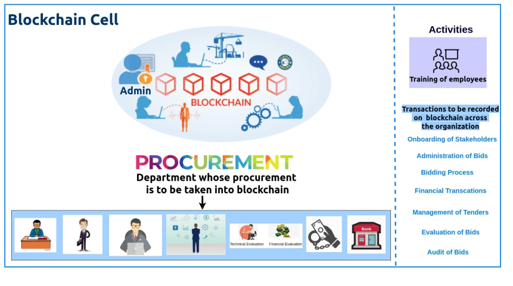

FAQs¶
What functionality do you want to have administrative control over?
We don’t want single god users in our system
Do you want to allow anyone to join, but to implement a permissioned system in regards to which functions users can call?
No, this is a closed permissioned blockchain. Only qualified bidders can join the blockchain , bidder on-boarding will be subjective will be tackled by case basis
Is there sensitive data handled by your application that needs privacy measures put into place?
Yes, bids are sensitive data
Do you need the speed of near-instant transaction confirmation times?
Yes, we do not need any Proof of Work
Would a hybrid solution best fit your use case with some data stored on a public chain, and private data in a permissioned chain?
No hybrid soln will not work , whatever public data needs to be shared that will be done via db
Is your use case better suited to a public chain with private data stored in a centralized database or an encrypted state on a distributed storage option like Storj or IPFS?
This is an enterprise solution, we’ll not require ipfs and storj as : we don’t require decoupling of object store from our solution Ipfs we don’t need a complex overlay network in our solution
Our storage of data will be constrained to peers in the organisation, will use industry standard approach
Minio is S3 compliant and we will use it as off offchain obeject store
Is there value in an immutable record? Or is an immutable record a requirement?
Yes, bidding value and date
What is the existing organizational structure? And what behavioral patterns to users have today? How does this product or service fit into their existing workflow?
Current structure is opaque and preferism is followed.
Are there any behavioral or organizational changes necessary to implement this use case?
Blockchain cell needs to be introduced.
Who needs to run a node? Who has read access? Who has write access?
Each organization and tenderbullet + auditor(kpmg+pwc) will be nodes. And specific peers within the org will have specific access.
What are the data storage requirements regarding archiving and regulation?
Data storage will be met by geo distributed crdt based object storage derived from customized version of minio. All inter communication will happen via VPN to tenderbullet